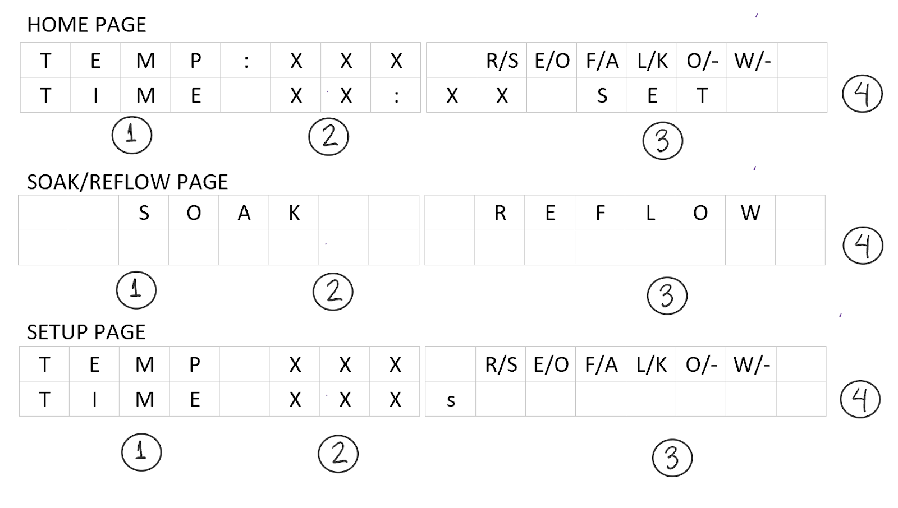

This project I built a microcontroller-frequency-meter metal detector by using an inductor that combined with capacitors and a not gate creates a colpitts oscillator that changes the frequency of the pulses according to distance of the metal to the coil. The colpitts oscillator was built according to the diagram below.
Figure 1: Colpitts oscillator
For this implementation I used 10nF for capacitor C1, 100nF for capacitor C2, 1000𝛀 resistor and a 0.1H inductor. For the not gate I used two mosfets (N-channel and P-channel) back to back. The diagram of this implementation is shown below.
Figure 2: Not gate
The output of the not gate is inputted to the microcontroller which measures the period and the frequency of the pulses.
For the buzzer I used the combination of a diode and a bjt to create a simple switch that was able to beep when the coin was detected.The schematics of the circuit is shown below.
Figure 3: Buzzer
The output of the microcontroller is been inputted to the 330𝛀 resistor that goes to the gate of the bjt that acts like a switch that turns the buzzer on and off.
In order to control both servo motors I used an external 6v battery to supply voltage to the motors. The servo motors have 3 signals which two are power and one is the control signal. This signal goes to the microcontroller that by supplying a pwm signal it can control the angle of the servo.This can be seen on the schematic below.
Figure 4: Servo Motor
Figure 5: Circuit schematic
Figure 6: High level design
The software was built to identify the frequency of the inductor and to output a pwm to both the servo motor and the speaker, turn the electromagnet on and off and also display on the lcd.
The inductor generates a pwm with a specific frequency and it changes when a metal gets closer to it. Thus,the detection of the coin was done by enabling the P0.0 as an input in line 75 and by using timer 0 to detect the period. After detecting the frequency range of the inductor without any metal, an if statement was used to turn the sound and change the angle of the servo motor if the frequency changes significantly. To create the sound a pwm was produced using timer 2. Moreover , in order to change the frequency of the sound according to the distance of the coin the variable of the inductor frequency was used as a variable to change the reload value of timer 2, this can be seen on the line 229.
The servo motor uses a pwm signal to change the angle of the motor. Since timer 5 has a maximum reload value of 10ms a FSM was implemented to get periods above 10ms. With this implementation it was possible to make a routine for the two motors to pick up and place the coin in the box in the most effective way. The speed was modulated by using a for loop to change the reload value(period) of the servo gradually. This enabled me to regulate the velocity while the magnet was with the coin, so there is no risk of the coin falling off.
The implementation of the electromagnet was simple, since it is just one signal that turns on and off. Thus I turned the pin on before the servo routine to pick up the coin and when it is close to the box so it can drop the coin inside it. And lastly, I added the lcd. For this I had to implement sprintf to create a string and call a function that displays the string to the LCD, then I created a variable that counts the amount of times a coin was detected and output it to the LCD.
pedrorgl@student.ubc.ca
Mobile: (+1) 971 373 5120